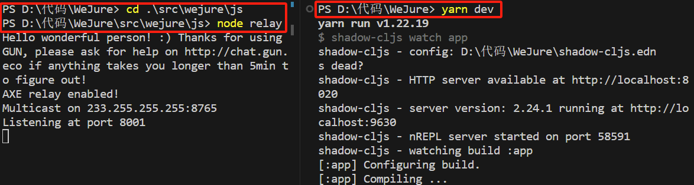
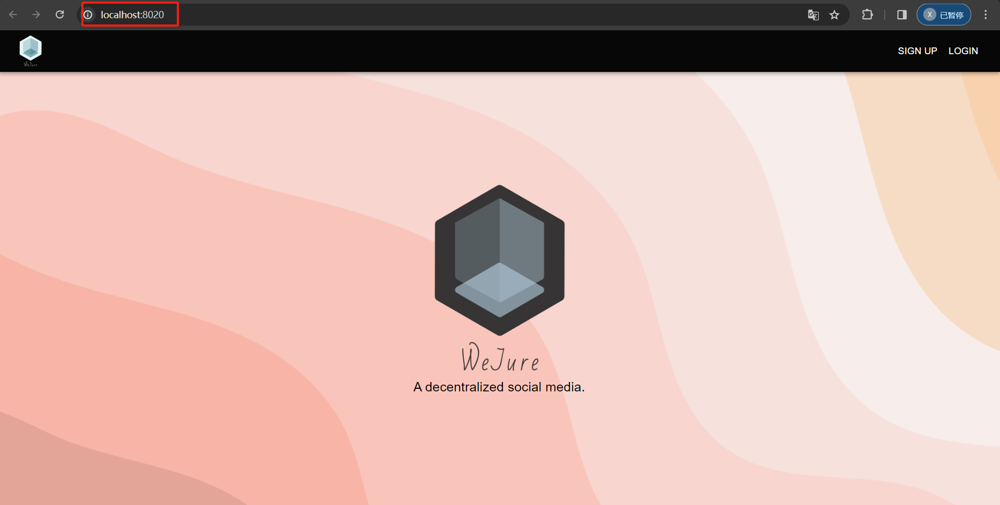

Step by Step Guide
- Get the code
- First-time setup
- Configure IPFS by hand (optional)
- Run WeJure
- Visit WeJure
- Use WeJure on more than one machine
- Delete all data
- For developers
Get the code
git clone https://github.com/clojure-finance/WeJure.git
cd WeJure
First-time setup
The setup scripts install the requirements (Node.js, Yarn, IPFS), initialize IPFS and download the dependencies.
macOS
./WejureStartup.sh
Linux
./setup_wejure_linux.sh
Windows (PowerShell)
Set-ExecutionPolicy RemoteSigned -Scope Process
.\WeJureWinStart.ps1
The scripts do not install Java. Check that a Java SDK 21 or newer is installed:
java -version
Configure IPFS by hand (optional)
The setup scripts already do this. If you set up IPFS yourself, allow the WeJure page to call the IPFS API:
ipfs config --json API.HTTPHeaders.Access-Control-Allow-Origin '["http://localhost:8020", "http://localhost:5001", "https://webui.ipfs.io"]'
ipfs config --json API.HTTPHeaders.Access-Control-Allow-Methods '["PUT", "POST"]'
WeJure uploads images through the IPFS API on port 5001 and loads them from the gateway on port 8080. If the API listens elsewhere, run:
ipfs config Addresses.API /ip4/127.0.0.1/tcp/5001
Run WeJure
macOS and Linux
./WejureRun.sh
Windows (PowerShell)
.\WeJureWinRun.ps1
The scripts start three processes, which can also be started by hand, each in its own terminal:
- the IPFS daemon:
ipfs daemon - the GunDB relay, which synchronizes data between browsers:
cd src/wejure/js && node relay - the development server:
yarn dev

Visit WeJure
Open http://localhost:8020 once the build has finished. Using WeJure explains what you can do there.

Use WeJure on more than one machine
Users only see each other's data when their browsers reach a common relay. To connect several machines, run the relay on a host they can all reach (for example HOST=0.0.0.0 node relay) and add its URL to peers in src/wejure/js/db.js.
Delete all data
- Clear the site data (local storage) in every browser that opened WeJure.
- Stop the relay and run
./remove_local_gun.sh, which deletessrc/wejure/js/radata.
For developers
Production build
yarn release
This writes an optimized public/js/main.js. Serve the public/ folder with any web server that falls back to index.html for unknown paths, since WeJure uses real URLs such as /home. The IPFS daemon and the relay must still be running.
End-to-end tests
npx playwright install chromium
yarn test:e2e
The first command installs the test browser and is needed only once. The test builds the release version and walks through every page with two users. It starts its own relay (with empty data), an IPFS stand-in and a web server on the ports WeJure uses (8001, 5001, 8080 and 8020), so stop any IPFS daemon, relay or development server first.
Data model and code layout
The WeJure README documents where each kind of data is stored in GunDB and how the code is organized.